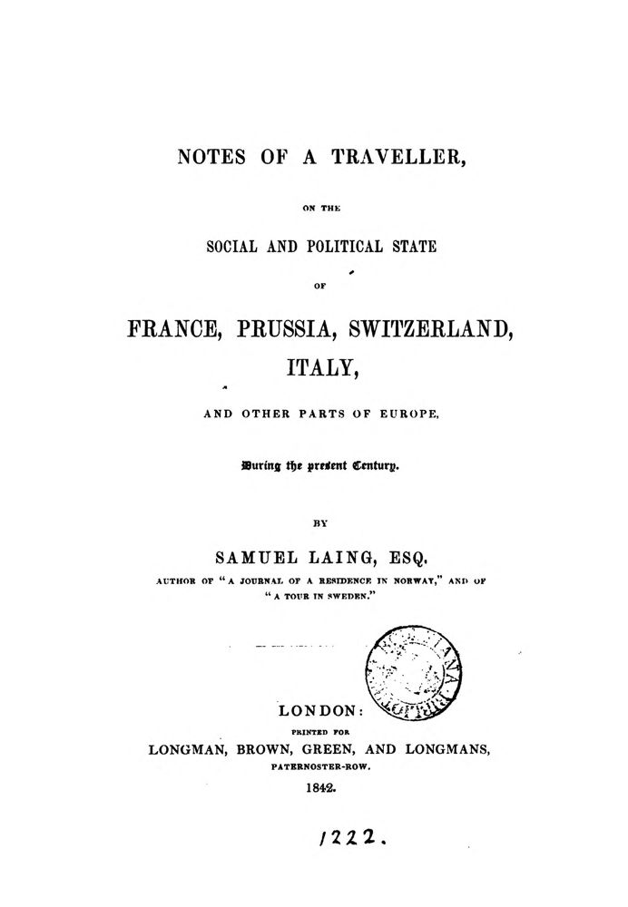

“A people eminently moral in conduct, yet eminently irreligious” (pp. 323–324)
English: pp. 323–324, scan and scan. Highlighted: Lecky’s quotation.

… without the higher influences of religion. But so it is. The Swiss people present to the political philosopher the unexpected and most remarkable social phenomenon of a people eminently moral in conduct, yet eminently irreligious; at the head of the moral state in Europe, not merely for absence of numerous or great crimes, or of disregard of right, but for ready obedience to law, for honesty, fidelity to their engagements, for fair dealing, sobriety, industry, orderly conduct, for good government, useful public institutions, general well-being, and comfort — yet at the bottom of the scale for religious feelings, observances, or knowledge, especially in the Protestant cantons, in which prosperity, well-being, and morality seem to be, as compared to the Catholic cantons, in an inverse ratio to the influence of religion on the people. How is this discordance between their religious and their moral and material state to be reconciled? It is so obvious, that every traveller in Switzerland is struck with the great contrast in the well-being and material condition of the Protestant and Catholic populations, and equally so with the difference in the influence of religion over each. …
Collation: Lecky has “religious feeling” for Laing’s “religious feelings”, “fair-dealing” for “fair dealing”, “wellbeing” for “well-being”, a colon after “irreligious” where Laing has a semicolon, and a semicolon for Laing’s dash before “yet at the bottom”. Laing’s preceding paragraph (p. 323) is about Swiss mercenaries serving the Pope and Naples; his explanation of the “discordance” follows on p. 324.
Editor’s notes on this page
Lecky quotes: “The Swiss people present to the political philosopher the unexpected and most remarkable social phenomenon of a people eminently moral in conduct yet eminently irreligious: at the head of the moral state in Europe, not merely for absence of numerous or great crimes, or of disregard of right, but for ready obedience to law, for honesty, fidelity to their engagements, for fair-dealing, sobriety, industry, orderly conduct, for good government, useful public institutions, general wellbeing, and comfort; yet at the bottom of the scale for religious feeling, observances, or knowledge, especially in the Protestant cantons, in which prosperity, wellbeing, and morality seem to be, as compared to the Catholic cantons, in an inverse ratio to the influence of religion on the people.” This is Laing’s text, with a semicolon after “irreligious” in Laing where Lecky has a colon, and “yet at the bottom of the scale for” in both. Lecky’s own judgement that the passage is “somewhat overstated” is his. The second half of Lecky’s quotation (“It is a very remarkable social state, similar, perhaps, to that of the ancient Romans …”) is on the following pages, which I did not read.
Further down the rabbit hole
Sources that Lecky cites in the notes next to the ones that cite this page.
- Edwards, Freedom of the WillThe great Calvinist concedes that God is “the Author of Sin”, in a sense
- Luther, De servo arbitrioLecky’s Luther quotes checked against a 1664 edition
- Augustine, Contra mendaciumAugustine rejects lying even to catch heretics
- Chrysostom, On the PriesthoodNot praise of lying, but defence of deceit for good ends
- Maury, Croyances et légendes de l’antiquitéPious frauds “fair play against heretics”, and the woman Simon Magus called the Thought of God
- Simancas, De Catholicis InstitutionibusAn inquisitor’s handbook: no faith with heretics, and torture


Backlinks
Every place in Rationalism in Europe that links to this page (generated automatically when the site is built).
- Chapter IV, Part I: note 35